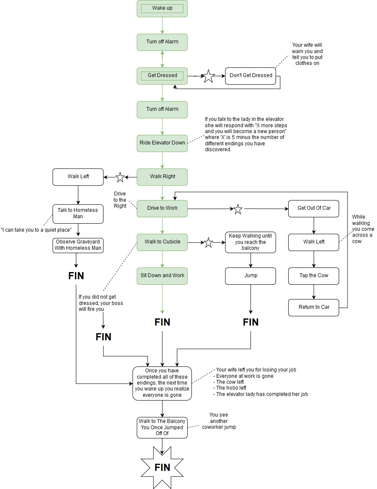

A: The narrative the game is trying to present is a statement on the monotony of everyday life and the cycles/routines we may find ourselves trapped in.
The way this is kept on track is built within the gameplay itself. The game will repeat itself endlessly without any sort of variation until the player breaks their routine.
The way the game permits variations is by testing the boundaries of the game and doing the unexpected. This can include things like ignoring directions, or skipping steps on your daily routine.
The result is a break from the monotony the game initially traps the player in.
A: The graphical quality of the game strongly reflects the games story and arguably enhances the statement it is trying to make.
The graphics are monochrome, simple, and bleak. This could be thought to represent the monotony and homogenous nature of the main characters life. As well this builds
a great foundation to tell a story about the monotonous lives society binds us to.
A: The interactions themselves are very simple and in the initial playthrough, the game very clearly directs you in the direction that
it wants you to go in the same way that we are forced into the routines of society. The main path is as follows: You wake up, turn off the alarm, get dressed, leave your room,
your wife greets you as you leave the house, you press the elevator button and wait for it to arrive, you enter the elevator, you can speak with the lady in the elevator and she
will tell you how many steps until you become a new person, you exit the elevator, walk to the left, drive to work, when you get out of your car you observe a single leaf on a tree
before you enter the building and go to work, you boss yells at you to get to your cubicle, you walk right passed an endless array of workers before sitting down in your cubicle,
the day ends. The image below highlights the variations the story can take when you break free from the routine explained above.
